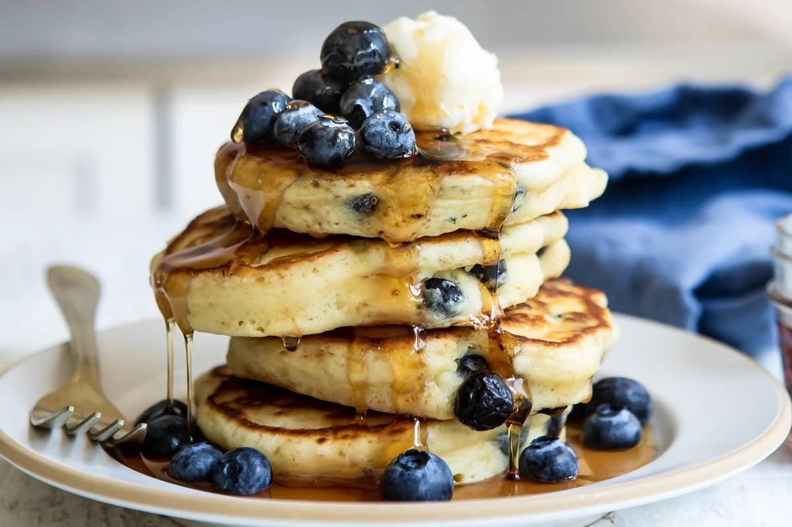

Chocolate Chip Pancakes
Ingredients
- 1 1/4 cups all-purpose flour
- 1 tablespoon baking powder
- 1 1/4 teaspoons withe sugar
- 1/2 teaspoon salt
- 1 cup milk
- 1 egg
- 1/2 tablespoon butter, melted
- 1/2 cup frozen blueberries, thawed
Steps
Step1
Sift flour, baking powder, sugar, and salt together in a large bowl. Combine milk and egg in a small bowl. Stir egg mixture into flour mixture until just combined. Stir in melted butter, then fold in blueberries. Set aside for 1 hour.
Step2
Heat a lightly oiled griddle or nonstick frying pan over medium-high heat.
Step3
Pour or scoop the batter onto the hot griddle, using approximately 1/4 cup for each pancake; cook until bubbles appear on the surface, then flip and cook until golden brown on both sides. Serve hot.